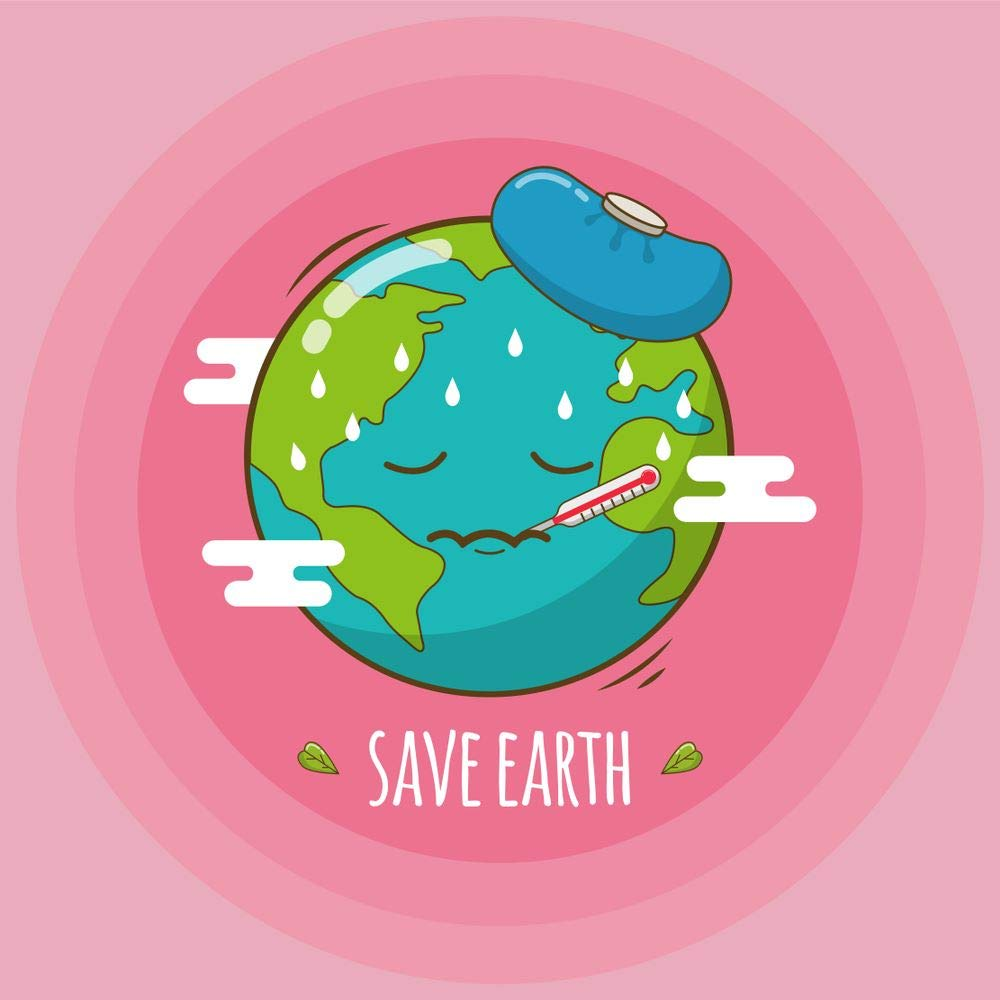

World Environment Day is celebrated every year on June 5 globally. It is a day on which we spread awareness about the environment and the need to conserve it. Moreover, it is essential to advocate for a greener environment and conservation of nature. It is quite simple as when we conserve the environment today, the future generations will be able to lead a healthier life. We cannot be so selfish and use up all the resources for ourselves . World Environment Day is the perfect opportunity to make people aware of the issues we are facing and how one can contribute to saving it. Thus, it is quite important in its own way.

-Abhinav.p